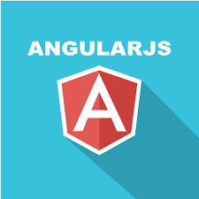
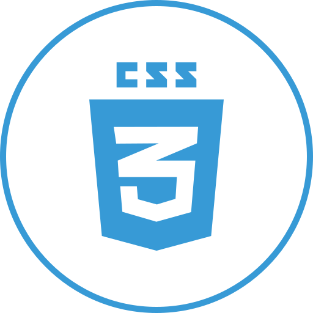
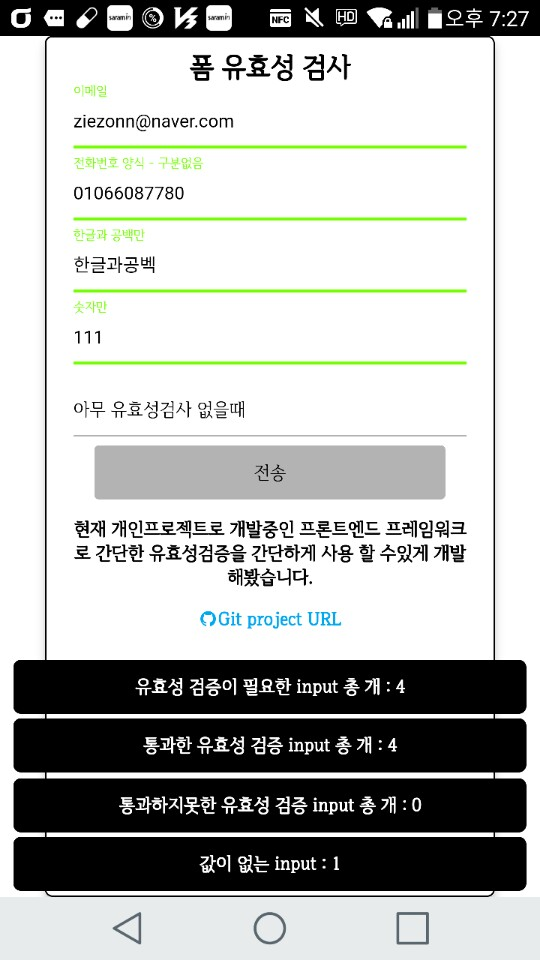

HTML

javascript(ES5)

Node.Js

Angular.Js

CSS

SASS

MySQL

MongoDB
군인에서 개발자가 되기까지.
특성화고 출신으로 군장학생으로 입학하여서 20살이 되자마자 입대를 하였습니다.
공구를 들고 화기정비를 하던 정비병생활과 간부로서 수리관 생활을 합쳐 3년이라는 시간을 군에서 보내는 동안 우연히 프로그래밍 교육을 접할 기회가 생겨 2주간의 파견 기간 동안 Java 기초 교육을 들을 수 있었습니다.
교육 기간 동안 절차지향언어, 객체지향 언어 구분도 못 하는 저는 단순히 저녁마다 담당 강사님께서 내주시는 프로그래밍에 문제를 해결하는 과정에서의 재미를 느끼게 되었고, 교육 기간이 끝난 이후에도 c언어의 기초 책을 사서 취미로 코딩을 하게 되었습니다.
이후에 저는 개발자가 되겠다는 꿈을 가지게 되면서 전역을 하였으며, 사전에 얻은 정보를 통해 국비학원을 6개월 동안 다니면서 본격적으로 프로그래밍을 접하게 되었습니다. 국비학원을 다니는 동안 하루하루를 프로그래밍 공부에 전념하였으며, HTML, CSS, Javascript를 접한 이후에는 JSP 쪽 서버개발보다는 프론트엔드 언어에 흥미를 느껴, js 기반의 server-side 언어인 Node.js와 Javascript를 공부하게 되었고 그 과정에서 서버와 클라이언트 모두 다룰 수 있는 full-stack 개발자가 되겠다는 목표가 생겼으며, 그 목표를 이루기 위해서 현재도 꾸준히 공부 중인 예비 개발자입니다.
간단한 form 유효성 검증 예제

페이지 이동
T 아카데미 Node.js 강의 정리한내용

페이지 이동